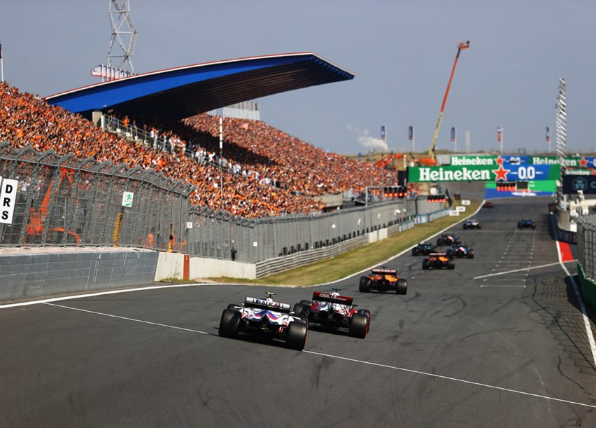

De kijkcijfers blijven maar stijgen en de Nederlandse racefans reizen de hele wereld over om hem in actie te zien. Het succes van Max Verstappen in de Formule 1 heeft van velen in Nederland een racefan gemaakt! Naast het team van Red Bull Racing komen de grote raceteams als Ferrari en Mercedes, met wereldkampioenen Vettel en Hamilton, ook naar Zandvoort. Ronkende motoren, gierende banden en duizenden racefans op de tribune in Nederland; voor de Nederlandse racefans een droom die uitkomt!

OVER DE DUTCH GRAND Prix
SEA OF ORANGE


"MEEST UITDAGENDE CIRCUIT"
Oud-coureur Jan Lammers is opgegroeid in Zandvoort en komt al van kleins af aan op het circuit. De sportief directeur van de F1 Dutch Grand Prix kan niet wachten op het race spektakel in eigen land. “Ik ben enorm trots dat we, na de laatste race in 1985, de terugkeer van de Formula 1 in Nederland kunnen aankondigen.” Ook kan hij niet wachten op het moment dat de coureurs over het nieuwe circuit racen. “Met deze aanpassingen wordt Circuit Zandvoort het meest uitdagende en mooiste circuit van Europa en misschien zelfs wel van de wereld.”